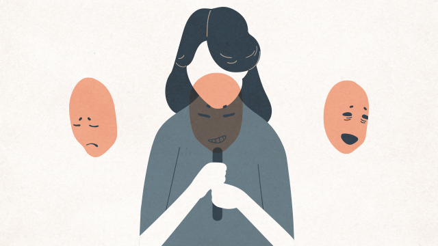
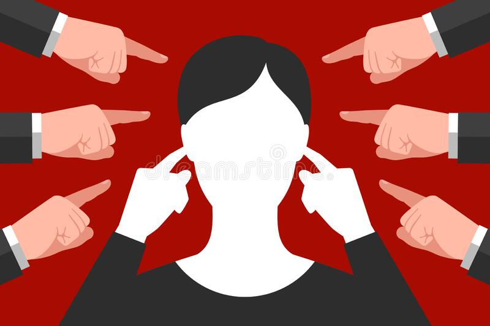

Misconceptions
People, especially older Filipinos, like to believe that when a person has any mental disorder, they are very violent or wild. They also love to hate people that undergo therapy and medications. They also label people them as "crazy" or "baliw". People with any form of mental illnesses are most likely be labeled with harsh words. They also scoff and laugh at people with mental illnesses and call them weak. We see in our television how this issue is always the subject of jokes. A disturbing amount of people look down on people that self-harm or suffer from panic attacks. Instead of offering help, they even add to the suffering that these people are already experiencing.
Effect On Society
These ideas are something we should abolish because of the negative effect on it on mental health. The sad thing about this issue is that here in the Philippines, it is something that people just make fun of. Because of this, many people that struggle with mental health issues are scared to come ask for help. They then suffer more because they were not given the help they needed. The stigma surrounding this topic is strong, but because of the rising number of Filipinos being aware about it, we have hope. I believe that one day, people will be accepting about mental health disorders and that the stigma will be gone.